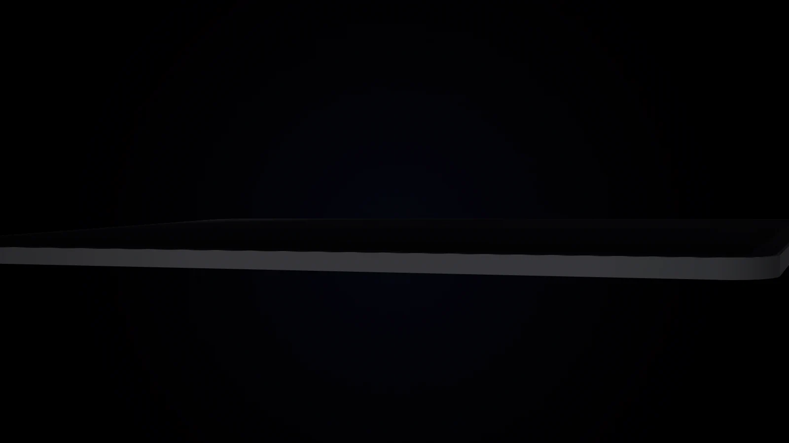
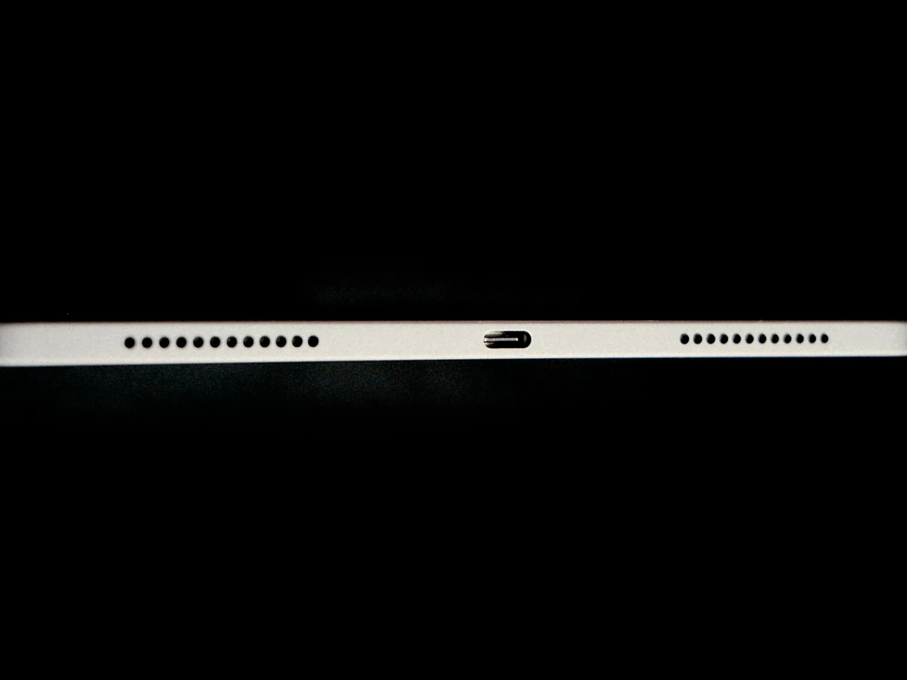
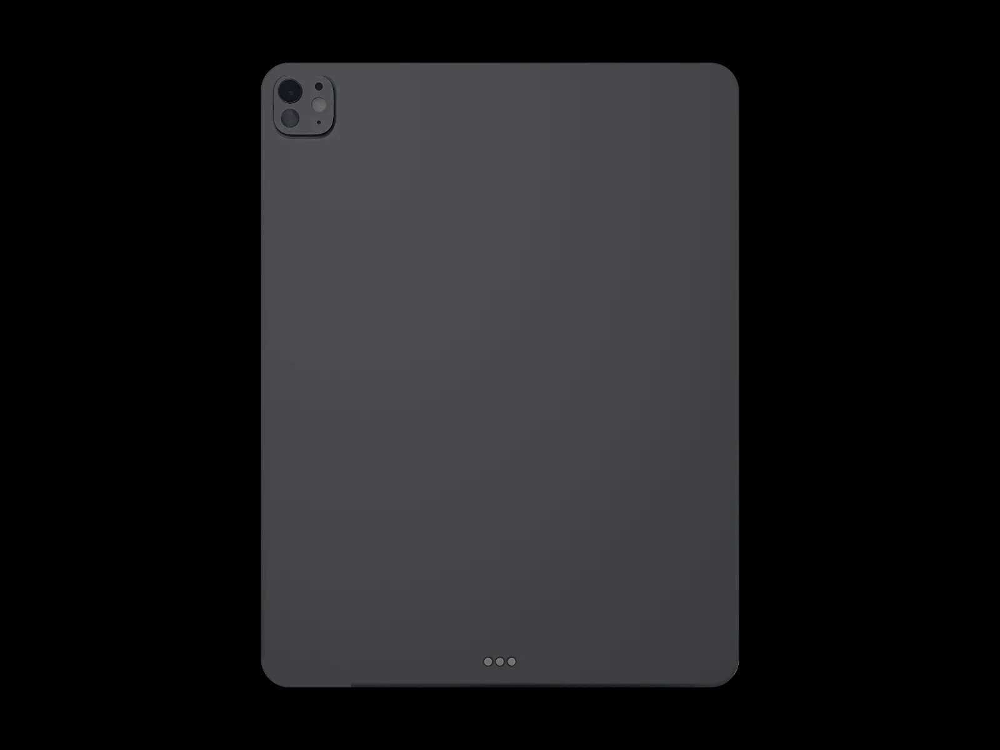
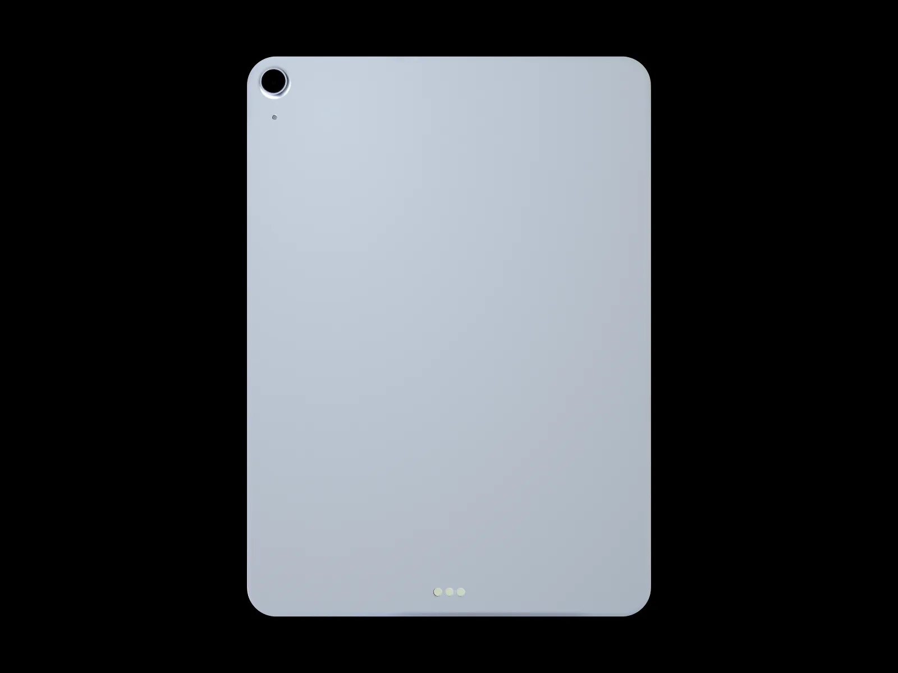
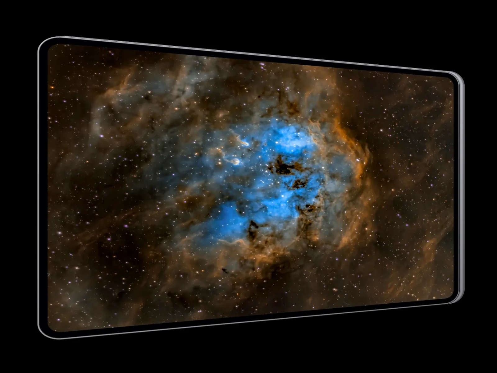
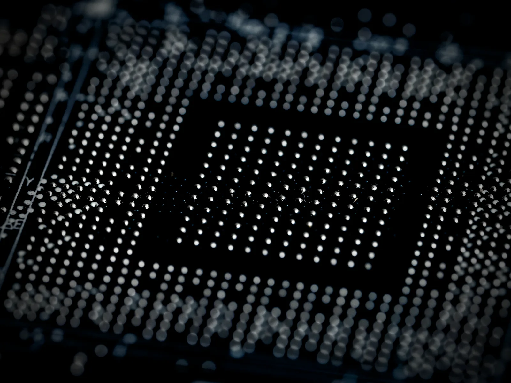
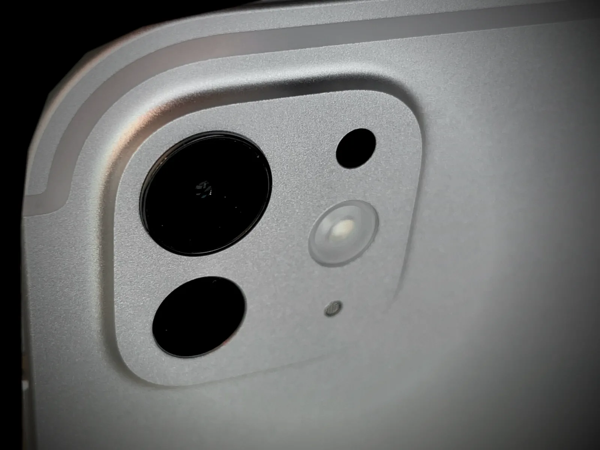
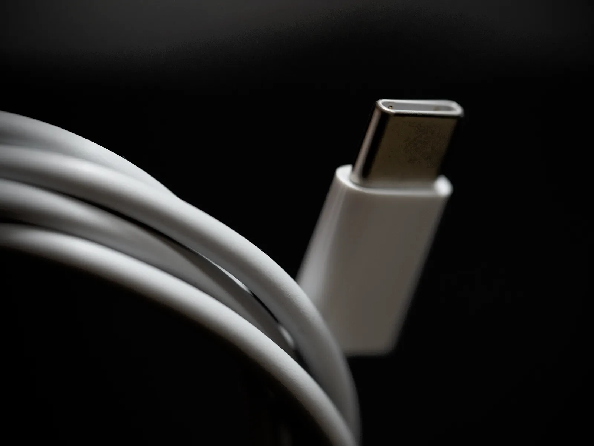
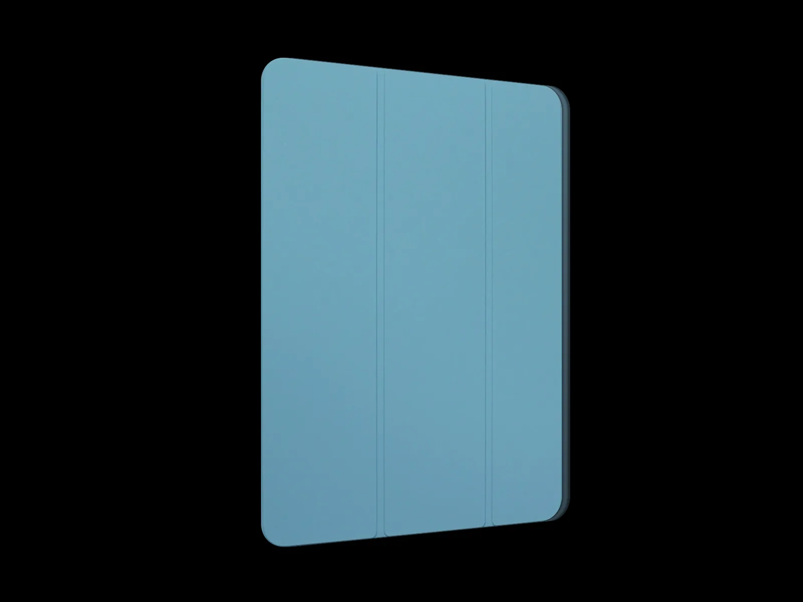
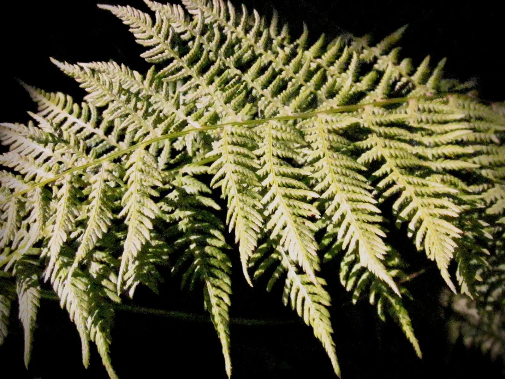

Ilustrar
Un cuaderno de bocetos sin última página.
AURA Pencil Pro y la pantalla Ultra Retina XDR responden tan rápido que el trazo aparece justo bajo la punta.

Gama auraPad
Potencia de estudio. Libertad de lienzo. Una nueva forma de trabajar, crear y conectar con tus ideas.


auraPad Pro
El auraPad más fino que hemos hecho. Y el más potente.
Es el grosor del auraPad Pro 13″, que pesa solo 579 gramos. Casi desaparece en tus manos.
Ultra Retina XDR con OLED en tándem: contraste de 2.000.000:1 y hasta 1.600 nits en HDR.
Chip AURA M5, auraPadOS 27 y AURA Pencil Pro para dibujar, editar y montar allí donde llegue la idea.
Comprar auraPad Pro 13″Encuentra tu auraPad
Tres auraPad, una misma ambición: que lo que imaginas no tenga que esperar.
Diseño
Cantos planos de aluminio, un marco uniforme alrededor de la pantalla y la cámara frontal en el lado largo, donde la buscas cuando trabajas en horizontal.

Solo
5,1 mm
de grosor en el auraPad Pro 13″, el más fino de la gama1
Solo
444 g
pesa el auraPad Pro 11″: se sujeta con una mano
Solo
6,1 mm
y 616 g en el auraPad Air 13″, con su gran pantalla


Pantalla
Dos paneles OLED apilados en tándem suman su brillo para el HDR, con un contraste de 2.000.000:1. Y ProMotion ajusta la frecuencia de 10 a 120 Hz según lo que haces: el trazo y el scroll van pegados al dedo.

Hasta
1.600 nits
de brillo máximo con contenido HDR en los auraPad Pro2
ProMotion hasta
120 Hz
que bajan hasta 10 Hz cuando la imagen está quieta
Hasta
13″
de pantalla, también en el auraPad Air
Opcional en los auraPad Pro con 1 TB o 2 TB: menos reflejos bajo una luz intensa y un tacto que recuerda al papel.
Una gran pantalla de 13 pulgadas con 600 nits y gama de color P3, para leer, dibujar y ver series con espacio de sobra.
Chip AURA M5
El chip AURA M5 reúne hasta 10 núcleos de CPU, una GPU de 10 núcleos y hasta 16 GB de memoria. Modelado 3D, vídeo multicapa y efectos en tiempo real, sin ventilador y sin hacer ruido.
Ver especificaciones
Hasta
10
núcleos de CPU y 10 de GPU en el chip AURA M5 de los auraPad Pro
Hasta
16 GB
de memoria en los auraPad Pro de 1 TB y 2 TB, para proyectos enormes
Hasta un
30 %
más rápido: el auraPad Air con AURA M4 y 12 GB, frente al Air anterior
Cámaras y LiDAR
El gran angular de 12 Mpx y el escáner LiDAR de los auraPad Pro captan cada estancia en 3D, con sus medidas. Delante, la cámara Center Stage está en el lado largo: en horizontal, te mira de frente.

Mide la distancia a cada superficie para colocar muebles y maquetas a escala, incluso con poca luz. En los auraPad Pro.
La cámara frontal de 12 Mpx te sigue si te mueves y te encuadra de frente en las videollamadas. En toda la gama.
Documentos escaneados que parecen recién impresos y texturas nítidas para tus modelos 3D. En toda la gama.
Batería y conexiones
Una carga da para la jornada entera, en clase o de viaje. Los auraPad Pro llevan Thunderbolt / USB 4 para monitores y discos externos; el auraPad Air, USB‑C; y toda la gama, Wi‑Fi 7, Bluetooth 6 y 5G opcional con eSIM.

Hasta
10 h
de navegación o vídeo con una sola carga, en toda la gama3
Hasta el
50 %
de batería en unos 30 minutos en los auraPad Pro
Hasta
40 Gb/s
con Thunderbolt / USB 4 en los auraPad Pro
auraPadOS 27 y AURA Intelligence
auraPadOS 27 se adapta a tu forma de trabajar y AURA Intelligence te echa una mano en el propio dispositivo.4
Ilustrar
AURA Pencil Pro y la pantalla Ultra Retina XDR responden tan rápido que el trazo aparece justo bajo la punta.
Editar vídeo
El chip AURA M5 mueve varias pistas 4K con efectos en tiempo real, sin ventilador y sin hacer ruido.

Estudiar
Escribe a mano y AURA Intelligence lo convierte en texto, resume el tema y te prepara preguntas para el examen.

Trabajar
auraPadOS 27 abre tus apps en ventanas que mueves y redimensionas a tu gusto. La oficina entera cabe en la mochila.

Accesorios
AURA Pencil Pro, Magic Keyboard y la funda Folio convierten tu auraPad en un cuaderno, un portátil o un compañero de viaje, según el momento.5
AURA Pencil Pro
Aprieta para abrir la paleta de herramientas, gíralo para orientar el trazo y nota cada gesto con una respuesta háptica sutil. Se empareja y se carga con un clic magnético en el lateral.
Compatible con toda la gama auraPad.

Magic Keyboard
Teclas retroiluminadas, fila de funciones y una bisagra que sostiene el auraPad con imanes, como si levitara. En los auraPad Pro, además, un trackpad háptico de vidrio.
Compatible con toda la gama auraPad.

Funda Folio
Se sujeta con imanes, se pliega en atril para ver o para escribir y despierta el auraPad en cuanto la abres. Tan fina que la tableta sigue pareciendo una lámina.

Privacidad y medio ambiente
Face ID en los auraPad Pro y AURA Intelligence trabajando en el propio dispositivo: lo que escribes, dibujas o dictas no tiene por qué salir de él.
Actualizaciones de auraPadOS durante años, reparaciones con AuraCare+ y AURA Trade In para que tu tableta anterior se reutilice o se recicle.

Comparativa técnica
Chip, pantalla, cámaras y accesorios de cada auraPad, lado a lado.
AURA Store